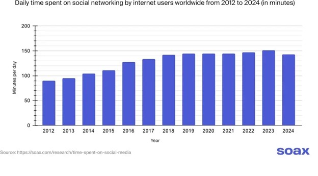
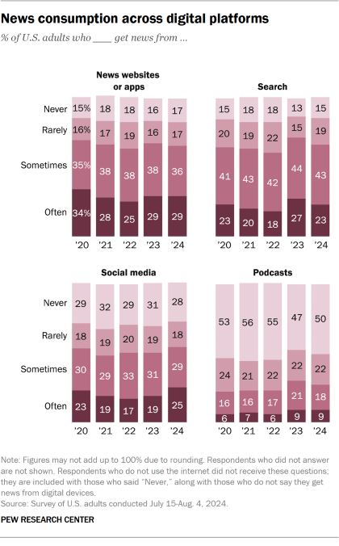
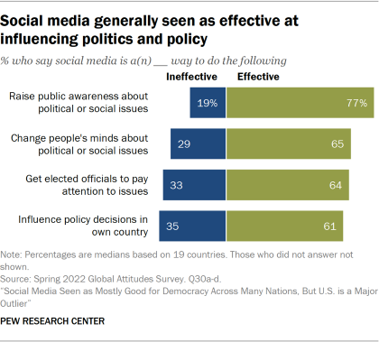
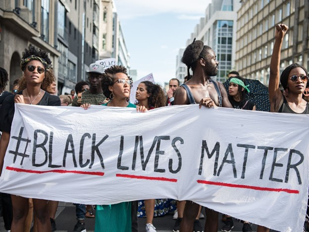

Social Media: A Double-Edged Sword in Civic Engagement
According to SOAX, the average person spends about 2 hours and 23 minutes on social media daily as of 2024.
I spend approximately three hours on social media daily. Easy access to social media has altered my social activities because it is convenient to keep in contact with my friends and families in other states and abroad. Moreover, I could also make various new connections through social media. While talking to people via social media is easier for small talk, I found that talking in person is better for having deep conversations that include emotional connections. It does not fully replace the depth of in-person communications. This duality represents that social media has advantages and disadvantages in personal and civic engagements.
Advantages
- Raising Awareness: Social media allows individuals to access and share information about significant issues. It rapidly reaches a large audience and promotes public discussion. In the United States, 54% of Americans at least sometimes get news from social media platforms. 
- Connecting Communities: Social media platforms help individuals with shared interests connect and foster discourse, providing opportunities to be engaged in civic engagement. This sense of belonging often empowers people to take further steps toward activism.
- Mobilizing Action: Platforms like Facebook and Twitter have been used to organize protests, rallies, and petitions, encouraging collective action on social issues. For instance, renowned online movements include #MeToo and #BlackLivesMatter which involve political messages and individual voices. Such events amplify individual voices and political messages that often lead to offline civic activities like voting.  
Disadvantages
- Misinformation Spread: One of the greatest challenges with social media is the spread of misinformation. Studies at Southern Carolina indicate that the structure of social media platforms such as Facebook and Twitter encourage users to share content without verifying its accuracy, resulting in a significant amount of fake news uploaded online. This misinformation can cause public confusion, panic, and poor decision-making.
- Superficial Engagement: Social media often fosters superficial engagement rather than meaningful connections. Interactions are mostly limited to likes, shares, and brief comments that require minimal effort. This can create a false sense of connection while failing to take further actions in relationships. As users prioritize this type of engagement over substantial conversations, they reduce emotional intelligence and social skills, leading to feelings of isolation.
- Lack of Personal Connection: The reliance on digital communication through social media results in a lack of personal connection. While social media enables broad communication, it replaces face-to-face interactions, which lack depth and trust. This can diminish the quality of relationships and lead to increased feelings of isolation. Users may compare their lives to others on social media, which exacerbates feelings of inadequacy and further distances them from genuine human interaction.
Balancing Online and Offline Civic Engagement
Research suggests that online and offline civic engagement are positively related and intertwined. Social media posts can mobilize others for offline protest, which creates a connection between digital and physical activism. Moreover, it has the potential to lead to subsequent offline civic action.
- Expressing Political or Social Views: Expressing views online is often easier due to anonymity and accessibility. It facilitates sharing individual experiences, building community, norm formation, and developing shared perspectives. However, in-person discussions are typically more constructive since they allow deep conversations and immediate replies. Moreover, social media use for social interaction alone does not directly influence political engagement. This balance is crucial for productive public discourse.
- Social Media vs. Traditional Activism While online activism can amplify voices and mobilize people, it works best when complemented by traditional methods. Social media is a base of civic participation as social media alone does not directly influence activism.
- Time Spent Online and Community Connections: Excessive online engagement can weaken connections to local communities, as it may replace face-to-face interactions. However, when used thoughtfully, social media can complement in-person activities by organizing and informing users about local events as people use social media as a news source report.